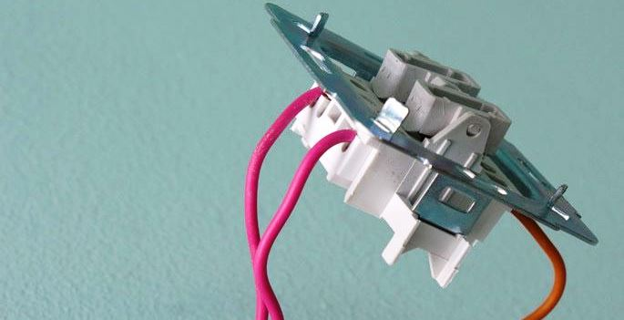
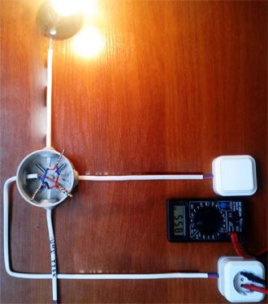
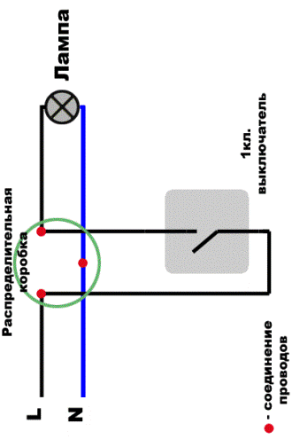

Качественный электромонтаж в Санкт-Петербурге и ленобласти, стаж 12 лет. Частный электрик, недорого и качественно.
Телефон - 8 904 642 08 57. Николай.

Проводка для выключателя.
Частный электрик в СПБ.
Обращайтесь ко мне и получите квалифицированную помощь в вопросах электрики!
Услуги электрика необходимы абсолютно в каждом доме. Жители квартиры с евроремонтом и новейшей проводкой вызывают меня - часто электрика для выполнения разного рода работ, связанных с заменой проводки, подведением розеток, выключателей. Данная статья подробно расскажет об услугах, которые предоставляю я, как частный электрик.
Сколько стоит провести провод для выключателя?
Цена работы от 700 руб. за 1 выключатель.
Почему люди вызывают специалиста на дом?
Чаще, познания многих мужчин в области электричества начинаются, да и заканчиваются, умением заменить пробку и проверить количество киловатт, которые "намотал" счетчик по электроэнергии. В таких вопросах, как проводка для выключателя, и подведение розеток, вызывает большие трудности у человека не знающего. Но каждый человек не обязательно должен разбираться в электрике. Это требует познаний в физике, чем может похвастаться далеко не все. Достаточно просто знать мой телефон и вызвать меня, когда поломка еще не "запущена". Чаще электриков вызывают не для того, чтобы устранить какие-то сбои, а для установки выключателей и подведения розеток в соответствии с современным дизайном помещения. Я оказываю эти и другие услуги по доступной цене.
Электрик по ремонту выключателя.
Я выполняю проводку качественно и предоставляю гарантию на услуги. Не секрет, что планировка советских зданий предполагает расположение розеток и выключателей в совершенно неудобных для этого местах. Это значительно затрудняет подключение электроприборов. Чаще получается, что подключая их в розетку, жильцам квартиры или дома приходится переступать через провода удлинителя, в который подключено 3 и более приборов. Кстати, такое подключение небезопасно, но у жильцов не остается выхода, только потому, что розетки расположены в неудобном месте! В этом случае обычно на помощи приходят специалисты как я, то есть, электрики.
Я осуществляю подведение проводки к розеткам в любом месте квартиры без крупных повреждений стен и перегородок.
То же самое касается и выключателям.
Старые планировки квартир предполагают наличие проводки для выключателей вверху стены, но с появлением моды на европейские планировки и дизайн, многие устанавливают выключатели внизу стены. Это гораздо удобнее и эстетичнее.
К примеру, до выключателя могут дотянуться маленькие дети.
Я выполняю практически все виды работ касающихся электричества, такие как: монтаж электрощитов, подключение приборов освещения, подведение датчиков и многое другое.
Покупаю светильники, многие смотрят лишь на их внешний вид, а о том, насколько сложно будет его подключить, покупатели не думают.
Я, как частный профессионал, помогу вам подключить абсолютно любой осветительный прибор в любой части вашей квартиры.
Я осуществляю замену проводки и подведение ее в кратчайшие сроки. Заказав мои услуги, вы можете быть уверены, что монтаж будет выполнен качественно, а проводка в квартире прослужит вам и вашей семье в течение нескольких десятилетий. Я могу дать гарантию на то, что все необходимые услуги будут выполнены на высшем уровне и в относительно короткие сроки. Работы по электричеству, выполняемые мной, имеют доступную всем категориям населения цену.


Сколько будут стоить материалы.


Электромонтаж в доме.
Замена электропроводки в двухкомнатной квартире?.
Сколько стоит сделать внутреннюю проводку?.
Установка люстр и светильников.
Электромонтаж проводов в бане.